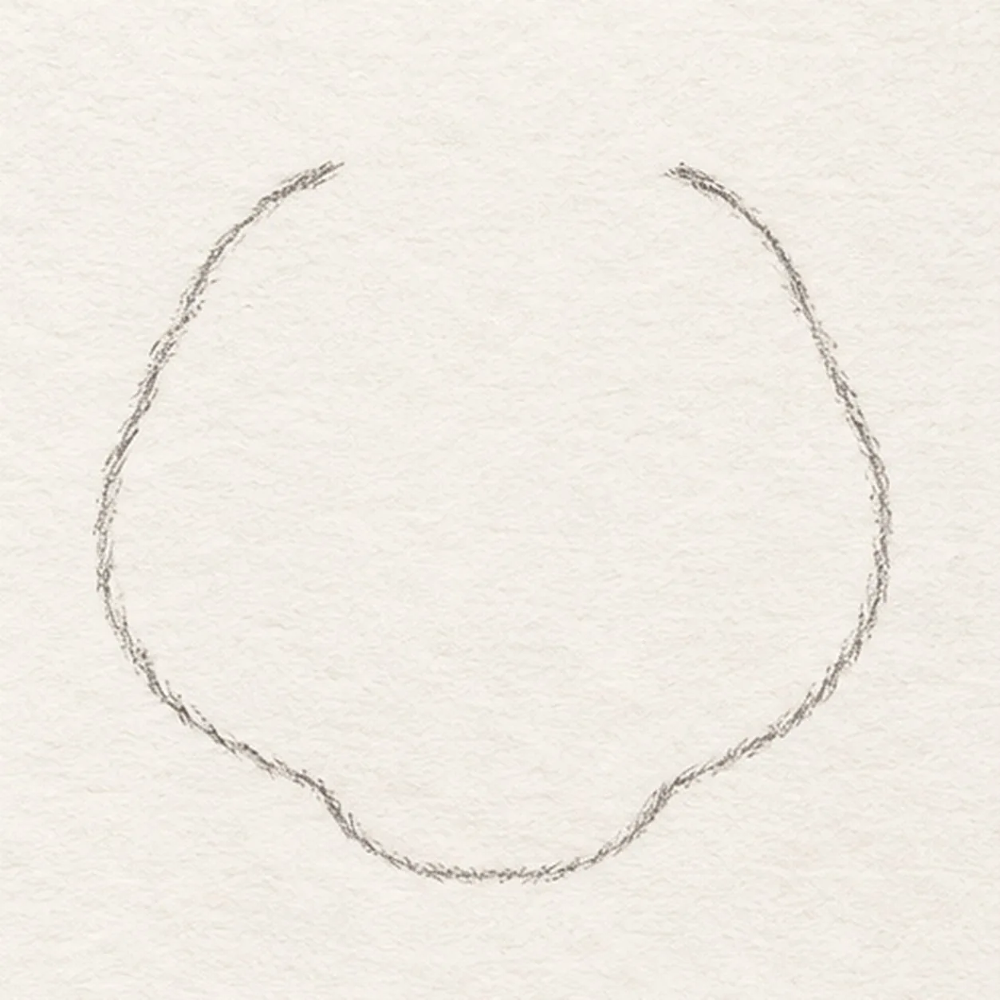
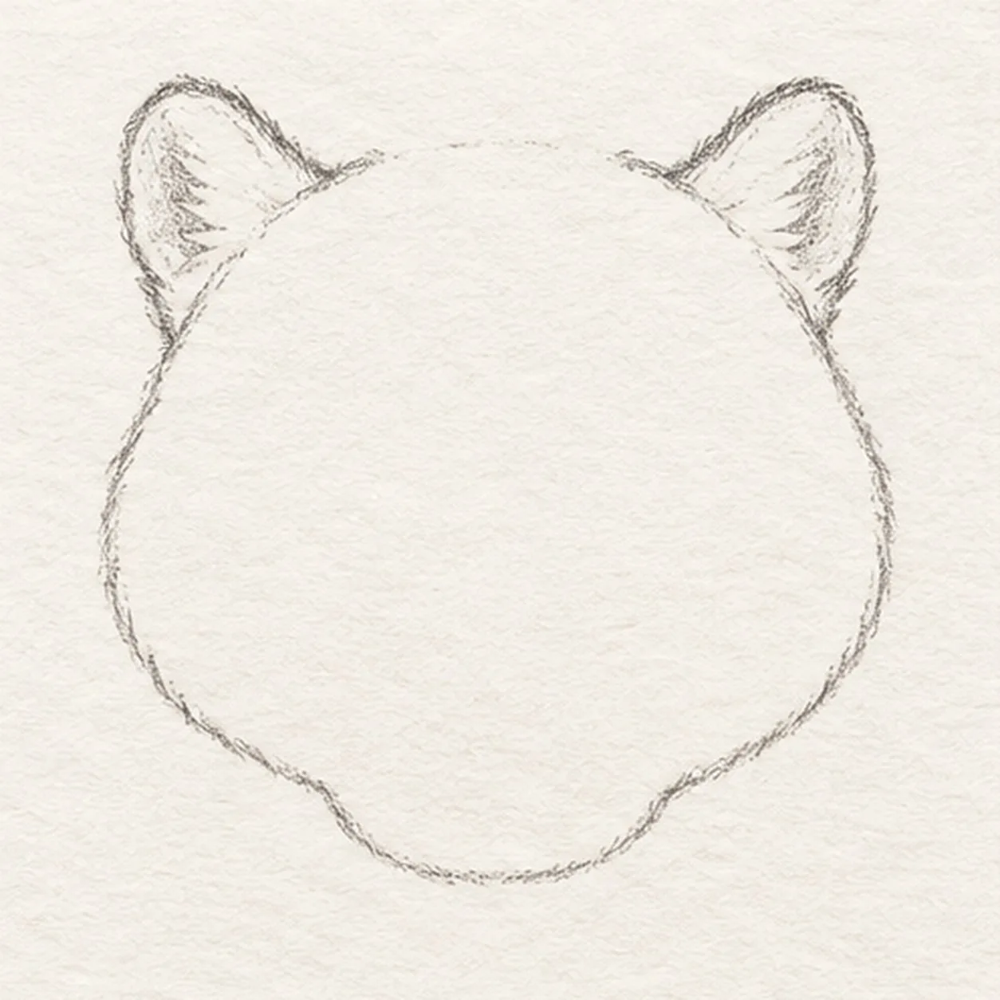
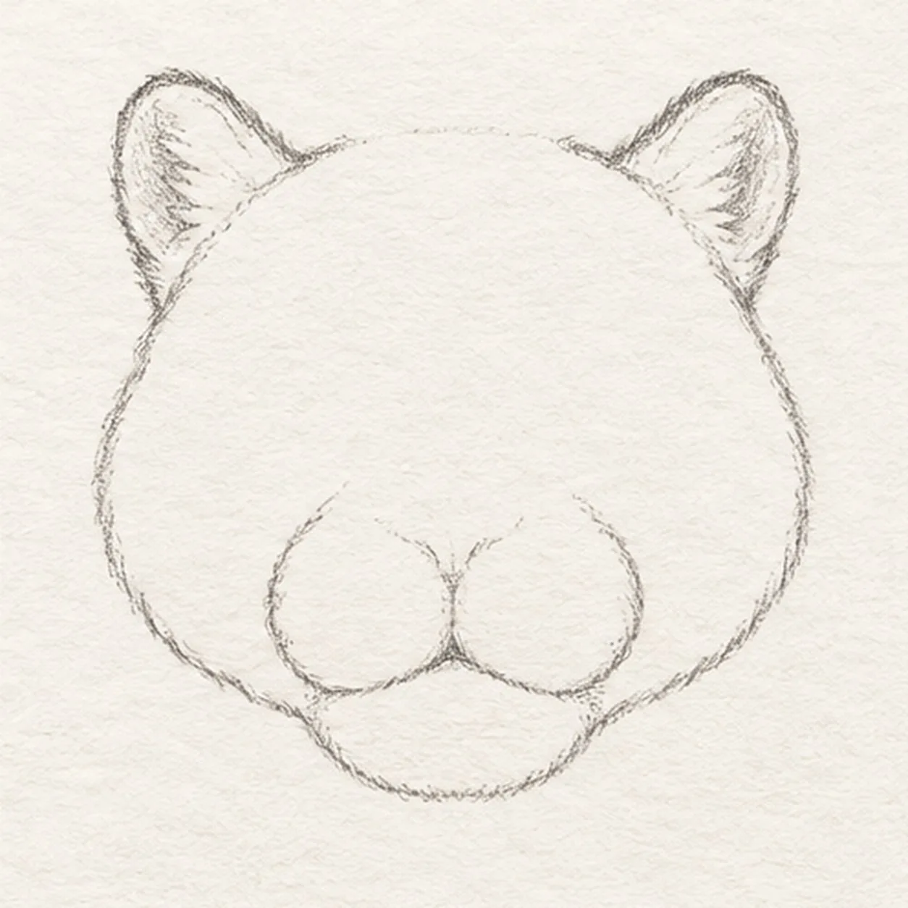
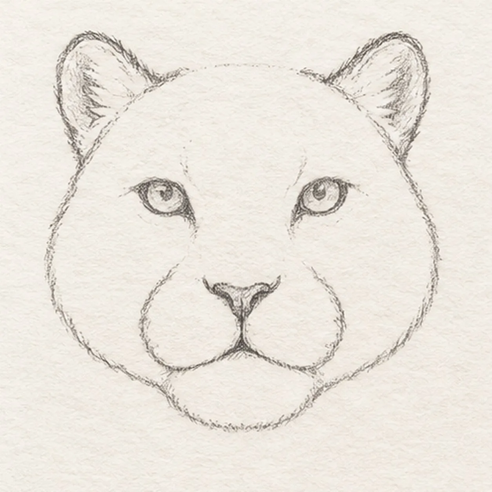
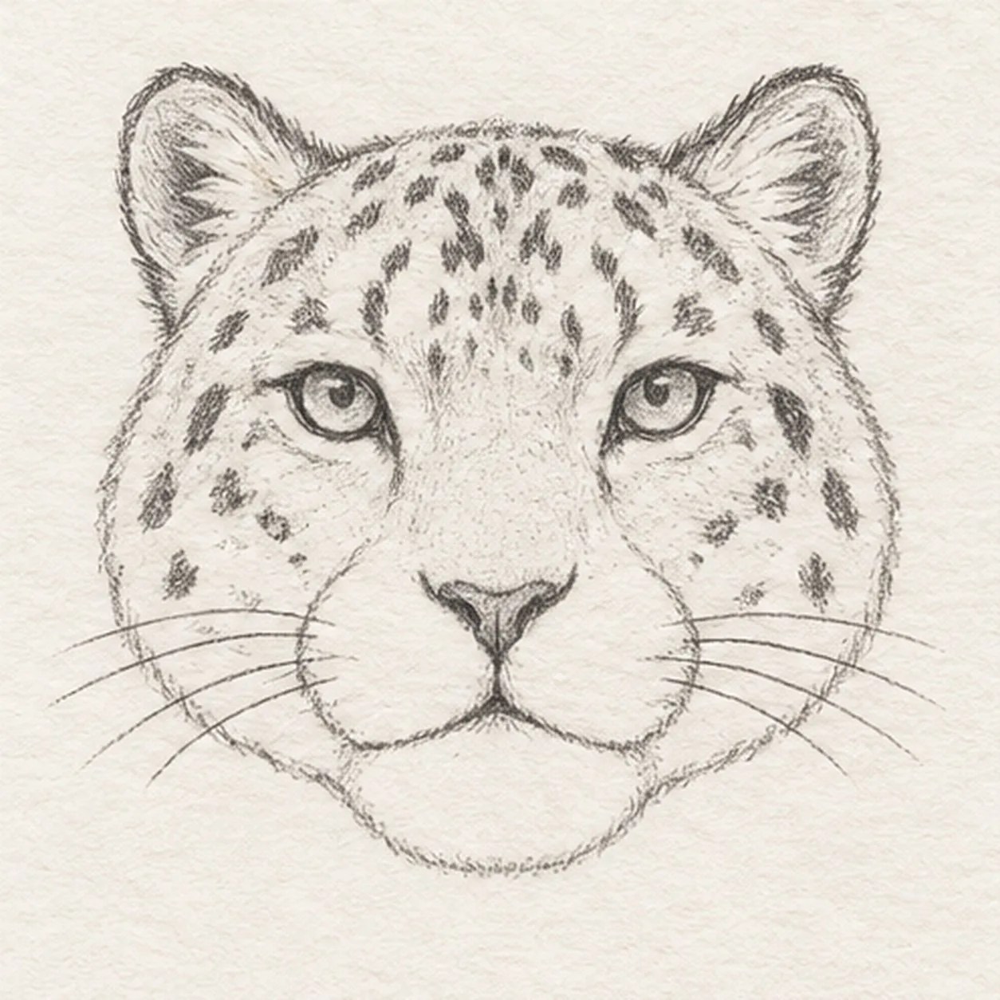

From the archive
Let's draw a snow leopard face
Treat this as one small practice round: build the subject lightly, notice the shapes, then darken only the lines that help the finished sketch.
-
01

Shape the broad feline face
Start high on the left cheek, curve down through a short rounded chin and up the right cheek. Leave two small openings along the top edge where the ears will attach.
Sketch tip: Keep the cheeks broad enough to hold the markings later.
-
02

Attach both rounded ears
From each top opening, rise into a rounded triangle and return to the forehead. Keep the ears at the same height, and hatch their interiors with short strokes.
Sketch tip: Draw the ears from their attachment points so neither floats above the head.
-
03

Build the soft muzzle
Draw a small rounded pad on each side of the face center, letting them meet beneath the nose space. Keep the already drawn chin curve below them.
Sketch tip: Leave a small central gap between the two pads for the nose.
-
04

Set the steady gaze
Place one tilted almond eye above each muzzle pad. Between the pads draw a small inverted triangle for the nose, then a short line down to the two halves of the mouth.
Sketch tip: Compare the eyes against the muzzle before darkening them.
-
05

Mark the snow leopard fur
Scatter open, broken rosettes across the forehead and cheeks, following the head curve. Deepen the existing inner ear hatching, then pull four long whiskers from each side of the muzzle.
Sketch tip: Use broken marks rather than neat polka dots, and keep the whiskers loose.
-
06

Shade the winter coat
Shade the established face with pale cool-gray pencil, warm the muzzle and inner ears with cream, and deepen existing rosettes and eye edges with graphite. Leave small paper highlights in both eyes.
Sketch tip: Let the paper show through the pale winter coat.